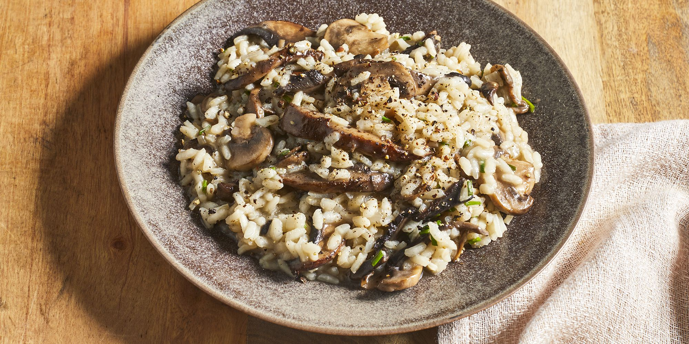

Mushroom Risotto

Authentic Italian-style risotto. Creamy and savory, this dish is a great treat for people who love the rich aroma and taste of mushrooms. You can even choose to add your choice of protein!
Ingredients
- 6 cups of chicken broth
- 3 tablespoons of olive oil
- Mushrooms
- 1 lb of portobello mushroom
- 1 lb of white mushroom
- 2 medium shallots, diced
- 1 1/2 cups of Arborio rice
- 1/2 cup of dry white wine
- 4 tablespoons of butter
- 1/3 cup of grated Parmesan cheese
- 3 tablespoons of finely chopped chives
Steps
- Warm broth in a saucepan over low heat
- Meanwhile, warm 2 tablespoons olive oil in a large saucepan over medium-high heat. Add portobello and white mushrooms; cook and stir until soft, about 3 minutes. Remove mushrooms and their liquid to a bowl; set aside.
- Add remaining 1 tablespoon olive oil to the saucepan. Stir in shallots and cook for 1 minute. Add rice; cook and stir until rice is coated with oil and pale, golden in color, about 2 minutes.
- Pour in wine, stirring constantly until wine is fully absorbed. Add 1/2 cup warm broth to the rice, and stir until the broth is absorbed. Continue adding broth, 1/2 cup at a time, stirring constantly, until the liquid is absorbed and the rice is tender, yet firm to the bite, about 15 to 20 minutes.
- Remove from heat. Stir in reserved mushrooms and their liquid, butter, chives, and Parmesan cheese. Season with salt and pepper and serve immediately.